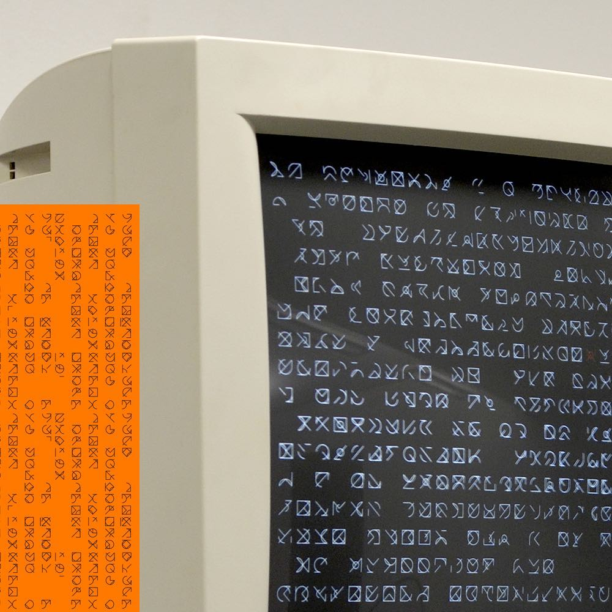
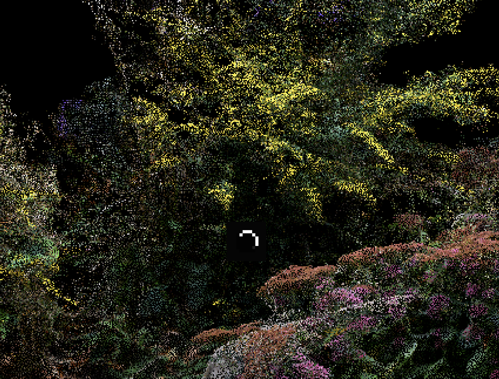

"Worldbuilding design patterns working together as a design pattern language have a similar goal: the creation of worlds that will have depth, believability and verisimilitude, that will be enjoyable to visit and inhabit and that will evoke the sense of awe and wonder that is at the heart of all successful subcreation."
Worldbuilders can add depth to a culture by inventing creation stories which would serve a foundational role.
Can there be a zone of wonder on the web?
"Zone of Wonder on the Web" Arena page (click on image)